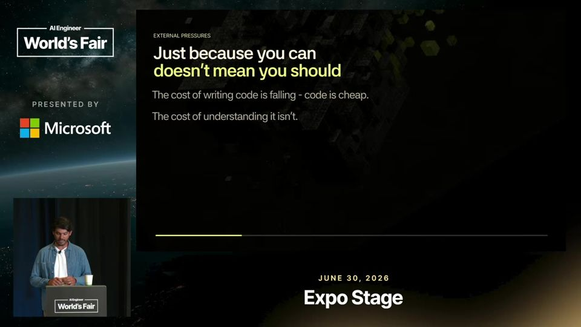
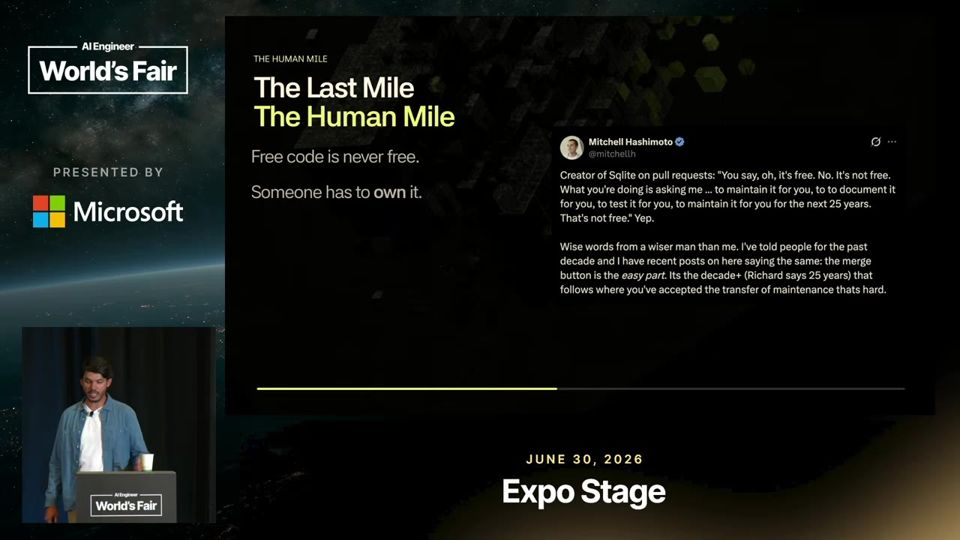
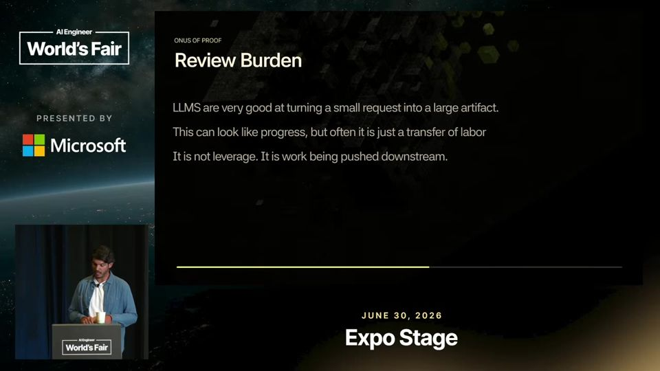

Generation Is Cheap, Review Is Expensive: How to Stop Shipping AI Slop
Gerar código custa pouco e revisar custa muito. Sem julgamento humano, a IA só produz mais coisa para alguém conferir.
Em 3 frases
Gabriel Martinez, da G2i, define slop como trabalho que parece pronto antes de o raciocínio terminar, com escolhas feitas por palpite e sem dono.
Ele aponta como causas a pressão para mergulhar PRs rápido, PRs de mil linhas e documentos de 20 páginas gerados por IA que empurram o trabalho de pensar para quem revisa.
Como remédio, propõe convenções (como as do Rails), diagramas como superfície de revisão, mudanças pequenas e donos claros, e apresenta a ferramenta ORC da própria empresa.
Antes de ler
- Slop trabalho que parece pronto, sem raciocínio por trás
- Pull request pedido de integração de código
- Big ball of mud bola de lama (sistema sem estrutura)
- Ralph loop laço que reexecuta o agente até terminar
- Superfície de revisão visão compacta do sistema para revisão humana
- Carga cognitiva cognitive overhead
Slop é falta de julgamento
Para o palestrante, slop é saída que parece terminada antes de o pensamento terminar. O perigo maior é o engenheiro nunca perceber que havia uma escolha a fazer. Software é um registro de decisões, e quem não vê a decisão não consegue ser dono dela.
00:32 A definição central do talk, que desvincula slop de código escrito por IA.
Código é passivo, linhas são gastas
Cada linha escrita é uma responsabilidade futura. Citando Dijkstra, o palestrante diz que linhas devem ser contadas como gasto, não como produção. A IA facilita gastar em arquivos e abstrações, e a conta chega como confusão e telas que parecem um labirinto.

O protótipo rápido engana quem decide
Um protótipo clicável em uma hora faz stakeholders acharem que a parte difícil acabou. O trabalho que sobra é fora do caminho feliz, requisitos, testes manuais e decidir se aquilo merece entrar no sistema. Ele cita o criador do SQLite: um PR não é grátis, alguém mantém por 25 anos.

Mais 2 ideias deste talk
Gerar é barato, avaliar é caro
Incentivos premiam quem mergulha mais PRs, o que gera ansiedade de desempenho e revisões superficiais. PRs de mil linhas e documentos de 20 páginas a partir de 10 tópicos transferem o trabalho ao revisor. Se a IA produz mais do que humanos conseguem avaliar, o time ganha um gargalo.

Convenções e diagramas mantêm humanos no controle
Com agentes gerando milhares de linhas, humanos precisam de uma superfície de revisão compacta: fronteiras de serviço, fluxo de dados, transições de estado e modos de falha. Convenções como as do Rails reduzem decisões repetidas e a carga cognitiva, o que ajuda também os agentes.
12:21 O diagrama como camada que humanos conseguem revisar.
O talk é opinião de um gerente de engenharia, sem dados medidos. As anedotas sobre ansiedade de desempenho e documentos de 20 páginas não trazem amostra nem métrica. A afirmação de que Rails é superior para agentes aparece sem teste. No fim vira pitch do ORC, produto da G2i, e o palestrante tem interesse comercial em vender a solução para o problema que descreve. A crítica ao Ralph loop e a Twitter é de tom, sem análise do que o padrão entrega na prática.
O que fazer com isso
- Peça a quem gera código ou documento com IA que resuma as decisões tomadas e as dúvidas resolvidas por palpite antes de abrir o PR.
- Limite o tamanho de PRs e documentos do time e quebre tarefas em pedaços que uma pessoa consiga revisar de uma vez.
- Documente convenções e padrões de arquitetura do projeto num arquivo que o agente leia, para reduzir estilos concorrentes.
- Use diagramas de fronteiras, fluxo de dados e falhas como material principal de revisão em mudanças grandes.